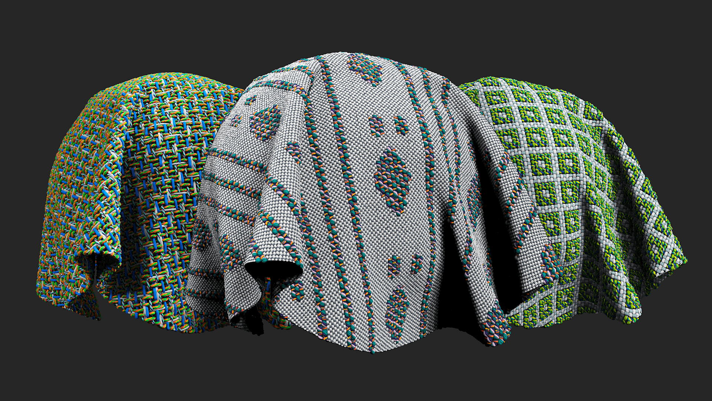

Design cloth fabrics with custom weave patterns.
Parameters
Basic parameters
Draw Custom Weave: Draw the weaves on your 2D viewport.
Color Custom Weave: Draw colors on 2D viewport to tint the weaves.
Weave Pattern: Set the weave pattern.
Pattern Size: Set the size of the pattern manipulating the Warp (vertical fibers) and the Weft (horizontal fibers).
Size Multiplier: Multiply the fibers only (masks will not be multiplied).
Lock Weave to Size Multiplier: Toggle
Apply the Size Multiplier to the weave and open color and mask constrains.
Lock Custom Color to Size Multiplier: Toggle
Apply the Size Multiplier to the Custom Color.
Lock Mask to Size Multiplier: Toggle
Apply the Size Multiplier to the Custom Mask.
Fibers Tension: Warp 0-1, Weft 0-1
Set the tension of the fibers.
Color Mode Warp: Set between Unicolor, Bicolor or None.
Color Mode Weft: Set between Unicolor, Bicolor or None. Add image to illustrate result.
Warp 1
Weft 1
Advanced
Mask